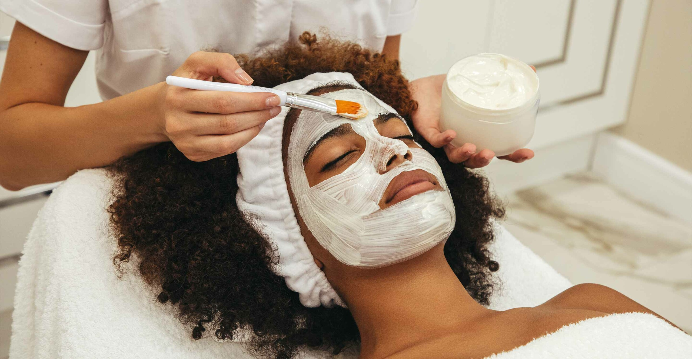
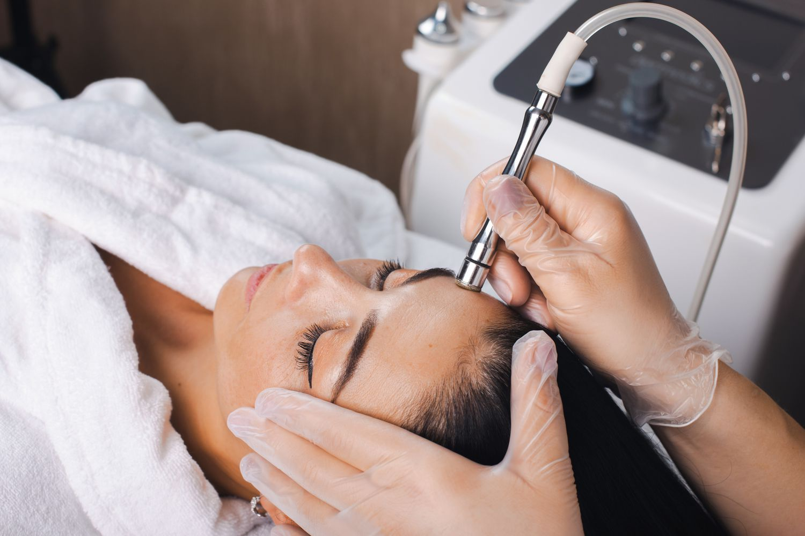
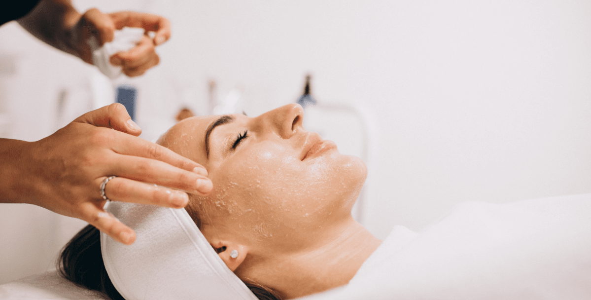

| Classic Facial | Price: $240 |
|---|
Experience the timeless luxury of our Classic Facial, a rejuvenating experience designed to cleanse, nourish, and revitalize your skin. Begin with a personalized consultation with a skilled esthetician to understand your unique skin concerns and goals. The treatment includes a luxurious exfoliation treatment, a blissful facial massage, and a custom-blended mask infused with antioxidants, vitamins, and botanical extracts. A scalp, neck, and shoulder massage is also provided to promote relaxation. As the treatment concludes, a lightweight moisturizer and SPF are applied to protect and nourish your newly rejuvenated skin. This luxurious treatment elevates your skincare routine to new heights of luxury and indulgence, promoting radiant beauty and nourishing the body, mind, and soul.

| Microdermabrasion | Price: $260 |
|---|
The Microdermabrasion Spa Treatment is a non-invasive exfoliation technique that gently buffs away dead skin cells and impurities, revealing a smoother, brighter complexion. The treatment begins with a cleansing of the skin, followed by a specialized handheld device that gently exfoliates the skin with microcrystals or a diamond-tipped wand, reducing the appearance of fine lines, wrinkles, acne scars, and sun damage. The treatment stimulates circulation, promotes collagen and elastin fiber regeneration, and leaves the skin feeling soft, supple, and revitalized. The esthetician adjusts the intensity and duration to suit the skin's sensitivity and tolerance. The treatment leaves the client feeling refreshed, rejuvenated, and radiant, promoting self-care and addressing specific skin concerns.

| Chemical Peel | Price: $395 |
|---|
Our spa offers a transformative Chemical Peel Facial, designed to refresh and renew your skin, leaving you with a radiant, youthful complexion. The treatment begins with a consultation where our esthetician assesses your skin type, concerns, and goals. After cleansing your skin, the chemical peel solution is applied to your skin, revealing fresher, smoother skin underneath. The peel solution is neutralized and removed, leaving you with a brighter, more radiant complexion. To protect and nourish your newly refreshed skin, our esthetician applies soothing serums, moisturizers, and sunscreen. This indulgent treatment unlocks the potential of your skin and leaves you feeling revitalized and rejuvenated.